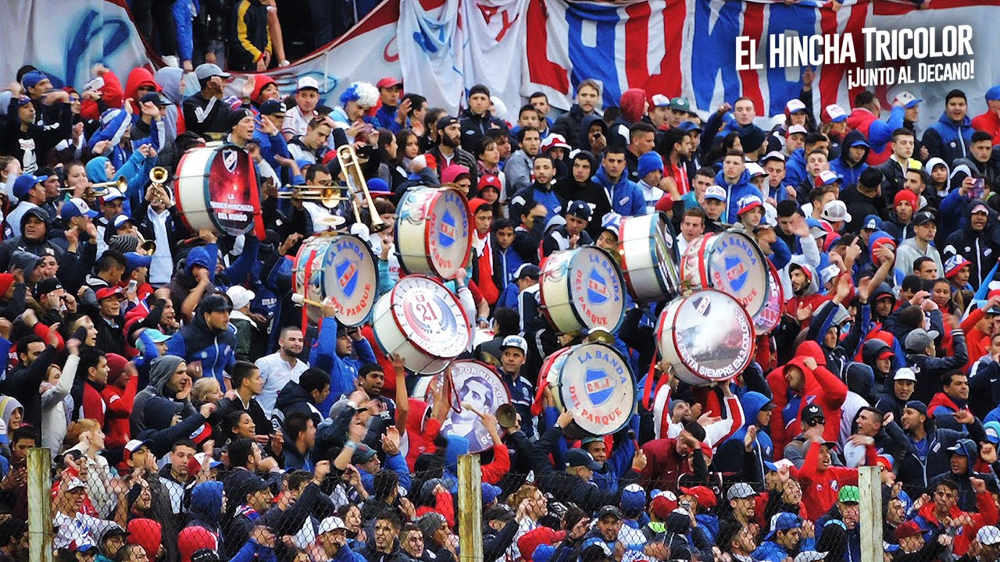
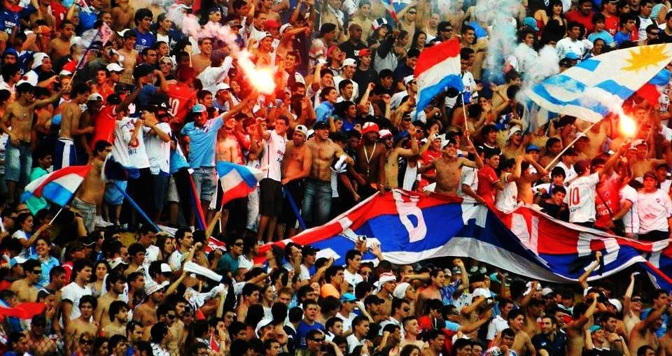

LA FAMOSA BANDA DEL PARQUE
nombre en alusión al Gran Parque Central (Estadio de Nacional). Por ello, los hinchas también son conocidos como Los del Parque o Los de La Blanqueda en alusion al barrio. Se formó a fines de la década de 1960, por lo que es una de las primeras barras de aliento de Uruguay, de Latinoamérica y del mundo. Es considerada como una de las barras mas violentas y organizadas del Uruguay; y se destaca por ser una hinchada la cual lleva mucho publico dentro del pais como fuera de él. La dirigencia del club ha trabajado y apoyado estos últimos años para disminuir la violencia que a lo largo de la historia la hinchada ha provocado. Miembros de la barra tambien trabajan en la seguridad del club y del estadio.


